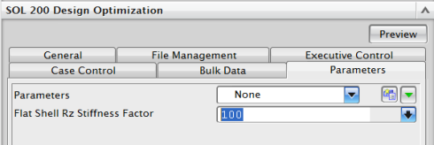

SOL 200参数 – 参数选项卡
可以在解算方案对话框的参数选项卡中定义这些参数这些参数是随 PARAM 模型输入指派的。
-
NASPRT – 求解器执行数据恢复和向 .f06 文件中写入输出的频率。
例如，仅输出第一个和最后一个设计、输出第一个设计和第 n 的倍数个设计或不输出任何设计。
默认情况下，除了执行分析和优化外，求解器还将在第一个设计循环及完成最后一个设计循环时执行完全数据恢复操作。
-
DESPCH1 – 求解器向 .pch 文件中写入设计循环输出的详细程度

参见 NX Nastran 快速参考指南中与 SOL 200参数相关的细节。